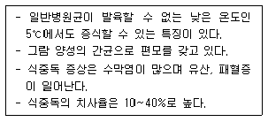
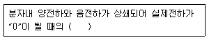
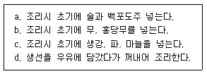
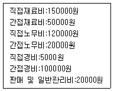

조리산업기사(공통) (2012-03-04 기출문제)
1과목: 식품위생 및 관련법규
1. 음식을 조리하기 전 손을 씻을 때 사용하기에 적합한 소독제는?
- 역성비누
- 30~40% 포름알데히드 수용액
- 3% 석탄산 수용액
- 승홍 1000배 용액
(정답률: 90%)

2. Salmonella균 중 식중독을 일으키지 않는 것은?
- Salmonella paratyphi
- Salmonella Typhimurium
- Salmonella enteritidis
- Salmonella thompson
(정답률: 66%)
3. 인체에 흡수되면 cholinesterase 작용을 저해하는 농약류는?
- DDT
- parathion
- BHC
- Dieldrin
(정답률: 62%)
4. 독성시험 중 반수치사량(LD50)을 구하는 시험은?
- 만성독성시험
- 변이원성시험
- 급성독성시험
- 최기형성시험
(정답률: 78%)
5. 열경화성 수지인 페놀수지, 멜라민수지, 요소수지 등 검출될 수 있는 유해물질은?
- 납
- 메탄올
- 포름알데히드
- 염화비닐단량체
(정답률: 79%)
6. 곰팡이독(mycotoxin)의 특징이 아닌 것은?
- 감염성이 있다.
- 고온다습한 환경에서 많이 발생한다.
- 곡류 등 탄수화물이 풍부한 식품 섭취가 원인이 된다.
- 항생물질의 효과가 없다.
(정답률: 49%)
7. 아플라톡신(aflatoxin)이 생성되기 가장 쉬운 것은?
- 덜 구워진 햄버거 고기
- 건조가 불충분한 곡류
- 초고온 살균된 유제품
- 불포화 지방산이 많은 어육
(정답률: 82%)
8. 영업허가를 받아야 할 업종이 아닌 것은?
- 유흥주점영업
- 일반음식점영업
- 단란주점영업
- 식품조사처리업
(정답률: 82%)
9. 다음과 같은 특징을 갖는 세균성 식중독의 원인 세균은?

- Listeria monocytogenes
- Salmonella
- Staphylococcus aureus
- Clostridium perfringens
(정답률: 58%)
10. Methyl alcohol(CH3OH)에 의한 중독 때문에 우리나라에서 규제치를 설정하고 있는 식품은?
- 청량음료
- 주류
- 단무지
- 두부
(정답률: 78%)
11. 식품위생법상 식품접객업 영업을 신규로 하려는 자는 사전 몇 시간의 식품위생교육을 받아야 하는가?
- 4시간
- 6시간
- 8시간
- 10시간
(정답률: 83%)
12. 숯불구이와 훈제육 등의 열분해물에서 생성되며 발암성 물질로 알려진 다환방향족 탄화수소는?
- 벤조피렌(benzo(α) pyrene)
- 니트로사민(n-nitrosamine)
- 포름알데히드(formaldehyde)
- 헤테로고리아민류(heterocyclic amine)
(정답률: 86%)
13. 병원성 대장균 O-157에 대한 설명으로 틀린 것은?
- 일반 대장균과는 달리 강력한 독소를 낸다.
- 식중독 증세는 용혈성 요독증후군으로 진행된다.
- 식중독의 원인은 단백질 식품에 한정되어 있다.
- 열에 대한 저항성이 약하다.
(정답률: 63%)
14. 과일 통조림주스에 통조림관으로부터 용출되어 잔류할 수 있는 유해성 금속물질은?
- 비소
- 아연
- 주석
- 바륨
(정답률: 83%)
15. 다음 중 유해 인공 감미료는?
- 삭카린나트륨(sodium saccharin)
- 둘신(dulcin)
- D-솔비톨(D-sorbitol)
- 아스파탐(aspartame)
(정답률: 72%)
16. 유독성분을 함유하는 식물과 성분이 맞지 않는 것은?
- 감자 - 솔라닌(solanine)
- 청매 - 시안(cyan) 배당체
- 목화 - 고시폴(gossypol)
- 피마자 - 뉴로톡신(neurotoxin)
(정답률: 77%)
17. 식품위생감시원의 직무에 해당되지 않는 것은?
- 수입∙판매 또는 사용이 금지된 식품등의 취급 여부에 관한 단속
- 표시기준 또는 과대광고 금지의 위반 여부에 관한 단속
- 영업소의 개업 및 기구의 배치
- 행정처분의 이행 여부 확인
(정답률: 85%)
18. 식품위생법상 허위표시에 해당되지 않는 것은?
- 제조방법에 관하여 연구하여 식품학∙영양학 등의 분야에서 공인된 사항
- 질병의 지료에 효능이 있다는 내용의 의약품으로 혼동할 우려가 있는 내용의 표시
- “인증”∙“보증” 또는 “추천” 을 받았다는 내용
- 심의받은 내용과 나른 내용의 표시
(정답률: 77%)
19. 식기류 등에 녹청이 형성되어 중독증상을 일으키는 성분은?
- Pb
- Cu
- Zn
- As
(정답률: 79%)
20. 식용얼음의 대장균군에 대한 규격은?
- 50mL 중 음성
- 50mL 중 10 이하
- 1000mL 중 음성
- 1mL 중 100 이하
(정답률: 69%)
2과목: 식품학
21. 냄새성분의 연결이 틀린 것은?
- 박하 - menthol
- 미나리 -myrcene
- 어류의 비린내 - TMAO
- 레몬 - citral
(정답률: 67%)
22. 아미노 카르보닐(amino-carbonyl) 반응에 대한 설명 중 틀린 것은?
- 초기단계에서는 질소배당체가 형성되며 무색을 타나낸다.
- 중간단계에서는 osone, HMF 등이 생성된다.
- 온도가 높아질수록 반응속도는 급속도로 증가한다.
- pH가 높을수록 갈변속도가 느리다.
(정답률: 69%)
23. 밀가루 5g을 취하여 킬달법으로 정량한 결과 질소량이 2.0% 이었을 경우 조단백질량은?
- 5%
- 7.5%
- 9.5%
- 12.5%
(정답률: 40%)
24. 콩나물을 조리할 때 비타민 C의 손실을 막는 방법은?
- 끓는 물에 장시간 동안 데쳐낸다.
- 뚜껑을 꼭 닫고 가열한다.
- 구리 그릇에 넣고 끓인다.
- 식염을 가한다.
(정답률: 69%)
25. 절단면에서 얄라핀(jalapin)이라는 백색 점액이 나오는 것은?
- 완두콩
- 땅콩
- 감자
- 고구마
(정답률: 88%)
26. 다음 식품 중 적색의 원인 물질이 다른 하나는?
- 수박
- 토마토
- 고추
- 사과
(정답률: 58%)
27. 효소에 대한 일반적인 설명으로 틀린 것은?
- 살아있는 생물체에서 만들어지며 화학반응을 촉매한다.
- 일종의 단백질로서 가열하면 변성되어 불활성화된다.
- 한 가지 효소는 두 가지 이상의 반응을 촉매하는 반응특이성이 있다.
- 활성을 나타내는 최적온도는 30~40℃ 정도이다.
(정답률: 49%)
28. 아밀로펙틴과 아밀로오스를 비교한 설명 중 틀린 것은?
- 아밀로오스는 포도당으로 구성되어 있고, 아밀로펙틴은 포도당과 과당으로 구성되어 있다.
- 아밀로오스의 요오드 반응은 청색이고, 아밀로펙틴의 요오드 반응은 적자색이다.
- 아밀로오스는 직쇄의 구조이고, 아밀로펙틴은 가지를 친 구조이다.
- 아밀로오스는 아밀로펙틴보다 분자량이 작다.
(정답률: 57%)
29. 파스타(Pasta)를 만드는 밀의 종류는?
- 박력분
- 라이밀
- 호밀
- 듀럼밀
(정답률: 83%)
30. 유지의 자동산화를 촉진하는 요인이 아닌 것은?
- 자외선
- 헴(heme)
- 구리(Cu)
- 폴리페놀(polyphenol)
(정답률: 70%)
31. 껍질을 벗긴 사과의 갈변에 관여하는 것은?
- 아스코르브산(ascrobic acid) 산화반응
- 티로시나아제(tyrosinase)
- 메일러드(maillard) 반응
- 폴리페놀옥시다아제(polyphenol oxidase)
(정답률: 72%)
32. 글루타민산 나트륨(MSG)에 구아닐산 나트륨을 넣으면 맛난 맛이 강해지는 맛의 현상은?
- 억제효과
- 상승효과
- 상쇄효과
- 대비효과
(정답률: 84%)
33. 비타민에 대한 설명으로 틀린 것은?
- 밀감에 있는 hesperidin은 비타민 P라고 한다.
- 필수지방산인 linoleic acid, linolenic acid, arachidonic acid는 비타민 F라고 한다.
- 비타민 B12는 분자내에 코발트를 함유하고 있어서 cobalamin이라고 불린다.
- 비타민 B2는 빛에서 안정하지만 열에는 불안정하다.
(정답률: 62%)
34. 두부 제조시 콩단백질이 응고되는 변성에 기인하는 것은?
- 염류
- 수분
- 알칼리
- 고압
(정답률: 80%)
35. 식혜제조에서 전분의 당화작용을 일으키는 효소는?
- 삭카라아제(saccharase)
- 베타아밀라제(β- amylase)
- 글루코아밀라아제(glycoamylase)
- 지마아제(zymase)
(정답률: 69%)
36. 신경계의 흥분을 억제하고, 효소작용을 촉진시키며 체액의 산, 알칼리 평형에도 관여하는 물질은?
- 마그네슘
- 칼륨
- 철
- 인
(정답률: 77%)
37. 다음 중 결합수의 성질은?
- 전해질을 녹이는 용매로 작용한다.
- 건조에 의하여 쉽게 제거된다.
- 미생물의 생육∙증식에 이용된다.
- 식품성분들과 수소결합을 한다.
(정답률: 69%)
38. 단백질의 등전점에 대한 정의로 ( )안에 알맞은 것은?

- 용해도
- 삼투압
- 점도
- pH
(정답률: 67%)
39. 유화식품이 아닌 것은?
- 잣죽
- 마요네즈
- 마가린
- 흰죽
(정답률: 87%)
40. 겔(gel)의 분산상과 분산매를 순서대로 바르게 짝지은 것은?
- 고체 - 액체
- 액체 - 고체
- 고체 - 고체
- 액체 - 액체
(정답률: 71%)
3과목: 조리이론 및 급식관리
41. 감의 떪은 맛과 관계 없는 것은?
- phloroglucine
- gallic acid
- shibuol
- chlorogenic acid
(정답률: 42%)
42. 생선비린내를 제거하는 방법 중 바른 것끼리 묶은 것은?

- a, b, c
- b, c, d
- a, c, d
- a, b, d
(정답률: 63%)
43. 다음 자료에 의한 직접원가는 얼마인가?

- 370000원
- 320000원
- 275000원
- 170000원
(정답률: 68%)
44. 열원에서 식품으로 열이 이동하는 방법이 아닌 것은?
- 전도
- 대류
- 초단파
- 복사
(정답률: 77%)
45. 꽁치 구이를 할 때 정미중량 75g을 조리하고자 할 때 1인당 구매량은 얼마로 하는가? (단, 꽁치의 폐기율39%)
- 약113g
- 약123g
- 약133g
- 약192g
(정답률: 57%)
46. 닭의 가열조리시 나타나는 닭뼈주위의 근육이 거무스름하게 변색되는 이유는?
- 많은 지방함량이 가열에 의해 변색
- 병에 걸린 닭의 가열에 의해 변색
- 성숙한 닭의 질긴 육질이 가열에 의해 변색
- 냉동닭이 해동시 닭뼈골수의 적혈구가 파괴되어 가열에 의해 변색
(정답률: 84%)
47. 우유에 대한 설명으로 틀린 것은?
- 우유의 락트알부민은 황화수소를 가지고 있어 가열시 독특한 향취가 난다.
- 우유 카제인은 알칼리와 열에 응고된다.
- 우유를 뚜껑없이 가열하면 피막이 형성된다.
- 우유를 고온에서 가열하면 바닥에 착색되는 것은 메일라드 반응에 의한 것이다.
(정답률: 60%)
48. 손익분기점에 대한 설명으로 알맞은 것은?
- 이익이 최대화되는 시점
- 총비용과 총수익이 일치하는 시점
- 총수익이 총비용을 앞서기 시작한 시점
- 총비용이 총수익을 앞서기 시작한 시점
(정답률: 63%)
49. 생대두에 들어있는 특수성분이 아닌 것은?
- glycinin
- trypsin inhibitor
- saponin
- hemagglutinin
(정답률: 52%)
50. 쇠고기 편육을 할 때 옳은 것은?
- 양지머리, 안심, 사태 등 결합조직이 적은 부위일 수록 좋다.
- 편육제조시 졸(sol)상태의 젤라틴이 젤(gel)상태가 된 후에 무거운 것으로 눌러 모양을 잡아준다.
- 편육을 썰 때는 결의 반대방향으로 써는 것이 좋다.
- 고기는 찬물에 넣어 센불에서 계속하여 끓여준다.
(정답률: 74%)
51. 과일의 갈변억제에 관한 설명으로 틀린 것은?
- -10°C 까지는 효소작용이 계속되므로 -10°C 이하로 동결 저장한다.
- 파인애플주스에는 -SH 물질이 있어 여기에 깎은 과일을 담가둔다.
- 사과에서 추출한 폴리페놀옥시다제는 ph 3.0 이하에서 갈변이 억제된다.
- 갈변물질인 폴리페놀옥시다제는 소금의 나트륨(Na+)이온에 활성이 억제된다.
(정답률: 45%)
52. 오징어를 솔방울 모양으로 조리할 때 내장이 붙어있던 안쪽에 칼집을 내는 이유로 가장 적합한 것은?
- 세로방향으로 발달된 근섬유를 제거하기 위하여
- 섬유가 세로방향으로 된 진피를 수축시키기 위하여
- 가로방향의 4개의 껍질층을 모두 수축시키기 위하여
- 칼집을 내기 전에 오징어의 껍질층을 완전히 제거하기 위하여
(정답률: 68%)
53. 식품의 계량방법 중 틀린 것은?
- 밀가루는 체에 쳐서 누르거나 흔들지 말고 수북하게 담아 직선 spatula로 깎아 계량한다.
- 우유는 계량컵의 눈금까지 천천히 부어 계량한다.
- 황설탕은 계량기구의 형태를 유지할 수 있을 정도로 가득 채워 계량한다.
- 마가린은 냉장온도의 것을 계량기구에 담아 계량한다.
(정답률: 66%)
54. 우엉은 삶을 때 가끔 청색으로 변하는데 그 이유로 맞는 것은?
- 폴리페놀 성분이 우엉 색소인 안토잔틴계 색소와 반응으로 일으켰기 때문이다.
- 유기산이 우엉 색소인 안토잔틴계 색소와 반응으로 일으켰기 때문이다.
- 알칼리성 무기질인 Ca, Na, Mg 등이 나와서 안토시아닌계 색소와 반응을 일으켰기 때문이다.
- 산성 무기질인 S, P 등이 녹아 나와서 우엉속의 안토시아닌계 색소와 반응을 일으켰기 때문이다.
(정답률: 65%)
55. 식품구입시 감별법으로 옳은 것은?
- 두릅은 두릅순이 연하고 가는 것이 좋다.
- 다시마는 잔주름이 없고 녹갈색을 띤 것이 좋다.
- 양송이는 줄기가 단단하고 긴 것이 좋다.
- 쇠고기는 썰었을 때 육면에서 수분이 많이 나올수록 맛이 있다.
(정답률: 68%)
56. 물가상승시 재고액을 높게 책정하고 싶을 때 사용되는 재고액의 평가방법은?
- 최종구매가법
- LIFO(후입선출법)
- FIFO(선입선출법)
- 총평균법
(정답률: 42%)
57. 하루 필요 열량이 2500kcal일 때 20%를 단백질로 얻으려면 단백질은 몇 g 섭취하여야 하나?
- 125g
- 130g
- 135g
- 140g
(정답률: 69%)
58. 육류의 조리법 중 건열조리법은?
- braising
- broiling
- simmering
- stewing
(정답률: 63%)
59. 식품의 색소에 관한 설명 중 옳은 것은?
- 푸른색 채소는 장시간 가열할수록 클로로필이 클로로필리드로 변하여 올리브색이 된다.
- 동물성 색소 중 혈색소는 미오글로빈이다.
- 녹색채소는 조리시 중조를 가하면 녹갈색으로 변한다.
- 무, 양파, 양배추 속 등의 백색채소는 식초를 넣으면 더 선명한 백색이 된다.
(정답률: 60%)
60. 단체급식에서 식품위해요소중점과리기준(HACCP)에 의한 안전성 통제요서와 거리가 먼 것은?
- 작업동선 효율화
- 권장된 온도에서의 조리와 재가열
- 권장된 온도에서의 냉각
- 교차오염 방지
(정답률: 72%)
4과목: 공중보건학
61. 야간에 지표면의 온도가 낮아져서 생기는 기온역전은?
- 침강성 역전
- 복사성 역전
- 대기성 역전
- 전선성 역전
(정답률: 62%)
62. 모기가 매개하는 감염병이 아닌 것은?
- 일본뇌염
- 황열
- 말라리아
- 발진티푸스
(정답률: 79%)
63. 크롬(Cr) 만성 중독증의 특이한 임상 증상은?
- 빈혈
- 환청
- 비중격천공
- 백혈병
(정답률: 64%)
64. 진동이 심한 작업을 장기간 할 때 발생되기 쉬운 직업병은?
- 감압병
- 한센병
- 안정피로
- 레이노드씨병
(정답률: 78%)
65. 만성감염병의 특성에 대한 설명으로 옳은 것은?
- 발생률이 낮고 유병률은 높다.
- 발생률이 높고 유병률은 낮다.
- 발생률 및 유병률 모두 높다.
- 발생률 및 유병률 모두 낮다.
(정답률: 67%)
66. 저압 환경으로 오는 질병이 것은?
- 잠함병
- 잠수병
- 감압병
- 고산병
(정답률: 69%)
67. 진폐증 중에서 폐포에 섬유증식증을 유발하지 않는 것은?
- 면폐증
- 활석폐증
- 석면폐증
- 규폐증
(정답률: 46%)
68. 만성카드뮴 중독의 주요 증상으로 볼 수 없는 것은?
- 빈혈
- 폐기증
- 신장기능장애
- 단백뇨
(정답률: 54%)
69. 하수의 오염도 측정시 BOD의 측정온도와 기간은?
- 5℃에서 5일간
- 5℃에서 20일간
- 20℃에서 5일간
- 20℃에서 20일간
(정답률: 81%)
70. 소독약의 살균력을 비교하기 위한 지표로 작용하는 것은?
- 석탄산
- 크레졸
- 승홍
- 생석회
(정답률: 86%)
71. 경피감염을 하는 기생충은?
- 회충
- 구충
- 요충
- 폐흡충
(정답률: 63%)
72. 먹는 물의 정수과정으로 옳은 것은?
- 침전 → 여과 → 소독
- 침전 → 소독 → 여과
- 여과 → 침전 → 소독
- 소독 → 침전 → 여과
(정답률: 83%)
73. 하수의 혐기성 처리법에 속하는 것은?
- 임호프 탱크법
- 활성오니법
- 살수여과법
- 산화지법
(정답률: 64%)
74. 예방 접종할 때 순화독소(toxoid)를 이용하는 감염병은?
- 콜레라, 페스트
- 파상풍, 디프테리아
- 결핵, 황열
- 홍역, 수두
(정답률: 60%)
75. 부영양화 원인과 관계가 깊은 물질로 바르게 짝지어진 것은?
- 칼슘(Ca), 황(S)
- 철(Fe), 알루미늄(Al)
- 칼륨(K), 탄소(C)
- 질소(N), 인(P)
(정답률: 55%)
76. 자외선 가운데 생명선이라 불리는 Dorno의 건강선파장범위는?
- 120~180nm
- 180~220nm
- 220~280nm
- 280~320nm
(정답률: 74%)
77. 물의 자정작용에 해당하지 않는 것은?
- 침전작용
- 세정작용
- 산화작용
- 희석작용
(정답률: 40%)
78. 탄소계 물질이 있는 하수의 혐기성 분해로 가장 많이 발생되는 가스는?
- 암모니아
- 메탄
- 황화수소
- 수소
(정답률: 60%)
79. 홍역에 관한 설명으로 옳은 것은?
- 세균에 의한 감염병이다.
- 일반적으로 성인이 많이 감염된다.
- 열과 발진이 생기는 호흡기계 감염병이다.
- 만성 감염병으로 2차감염은 없다.
(정답률: 73%)
80. 일광 중 열작용이 강하여 열사병의 원인이 되는 것은?
- 감마선
- 자외선
- 가시광선
- 적외선
(정답률: 72%)